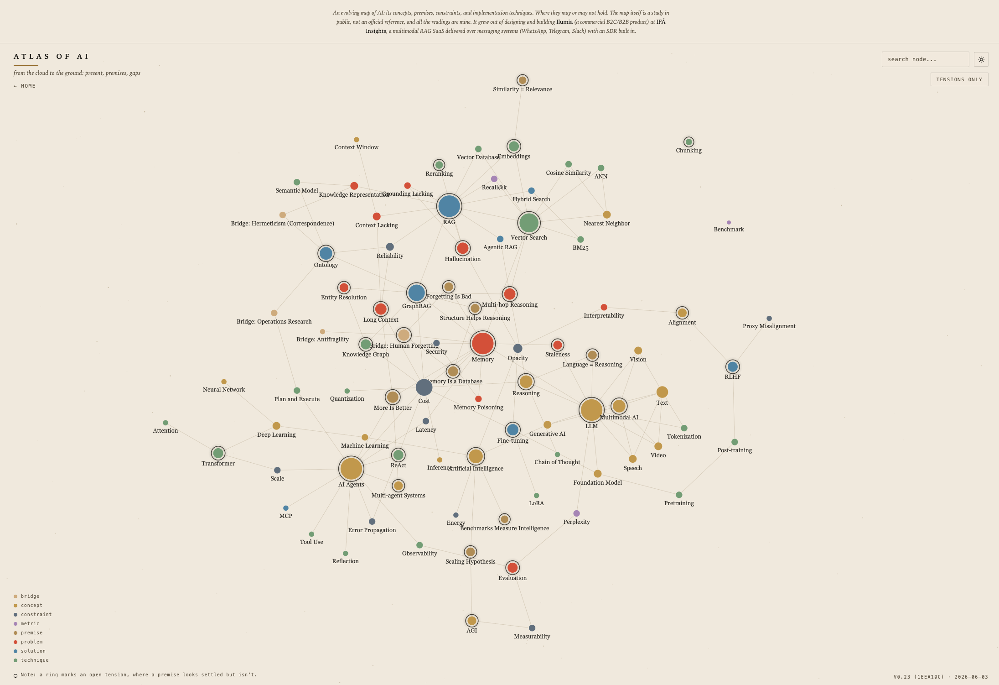
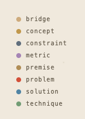
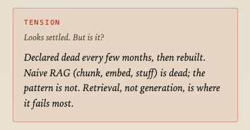
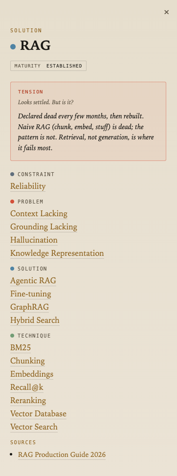

The AI Atlas: Origins and Motivations
Everyone in AI has information. Almost no one has a map. The field reinvents its vocabulary every few months, and the result is not understanding, it is noise. The AI Atlas is my answer to that noise: one map of the field, where the point is not the words, it is how they connect.
A map, not an encyclopedia
An encyclopedia tells you what each thing is. A map tells you how things relate, where they sit, and where the roads break. The Atlas is the second kind. Every idea in AI is a node, and what matters is the line between the nodes.

The value of a field is rarely inside a single concept. It lives in the space between concepts, the place where one idea quietly depends on another, or contradicts it. That space is exactly where most people stop looking. The Atlas exists to make it visible.
A grammar for the field
To map a field you need a grammar. Mine has one rule that does most of the work: type classifies, attributes describe. Every node is one of eight types: concept, problem, solution, technique, metric, premise, bridge, constraint.

That sounds bureaucratic. It is the opposite. Forcing every idea to declare what it is exposes the confusion that prose hides. RAG feels like a thing until you ask whether it is an idea, a method, or a way of solving a problem. It is a solution. Knowledge representation feels like a tool until you ask the same question. It is a problem. The grammar does not decorate the field. It disciplines it. Once every node knows what it is, the connections stop lying.
What is mine
Two things in the Atlas are not facts. They are my reading, and I mark them as such, because the honest move is to separate what the field agrees on from what I think.
Maturity is the market's view, not mine: emerging, contested, consolidating, established. It says how settled an idea is out there, and anyone can check it.

Tension is mine. Any node can carry one: the place where something looks settled but is not. It is the question I would put to a consensus that stopped questioning itself. RAG is established, and I still think the way we frame retrieval hides more than it solves. Both are true at once, and the Atlas holds both without flinching.
Then there are the bridges, the nodes that connect AI to things outside computing. Forgetting in neuroscience. Antifragility. Operations research. The field treats these as decoration. I treat them as load-bearing, because the best ideas in technology usually arrived from somewhere else first.
How to read it
Take one corner of the map and pull the thread.

Hallucination is a problem: the model states something false with full confidence. Next to it sit three more. Opacity, a constraint: you cannot see why the model answered, so you cannot catch the error from the inside. Grounding lacking, a problem: the answer is not tied to a source you can verify. Context lacking, a problem: the model never had the information to begin with.
One solution cuts across all three. RAG fetches knowledge at the moment of the question and feeds it to the model, so the answer can be anchored in something outside the training data. And underneath it, one technique does most of the quiet heavy lifting: reranking, which reorders what retrieval found so the model sees the best evidence first.
That is the whole method in miniature. You do not read a definition. You walk from a problem to its constraints, to the solutions that attack it, to the techniques that make those solutions work. The map teaches the relationships, which is precisely the part that definitions leave out.
Why I am doing this
Honestly, because it is how I think, and because the field rewards the people who can hold the whole shape in their head while going deep in one corner. The Atlas is both at once: breadth in the graph, depth in each node.
It is a study in public, not an official reference. It will be wrong in places. It will change. The readings are mine, and I would rather be precisely wrong and fix it than vaguely right and forget why. The map is the argument.
Enter the Atlas →